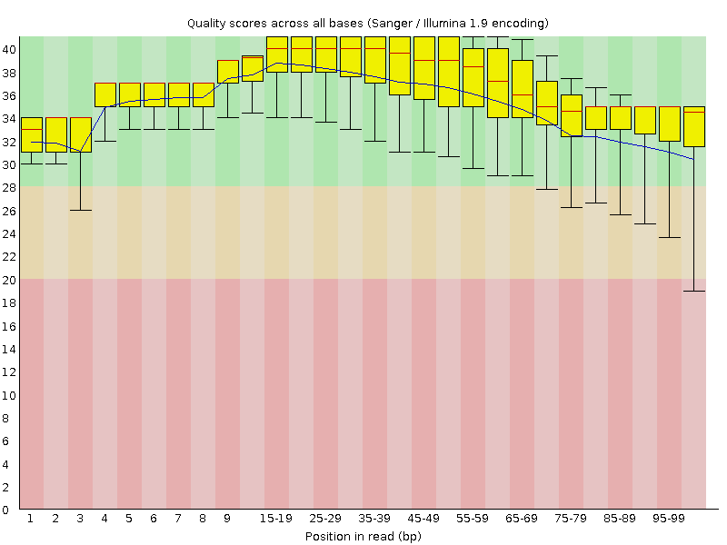
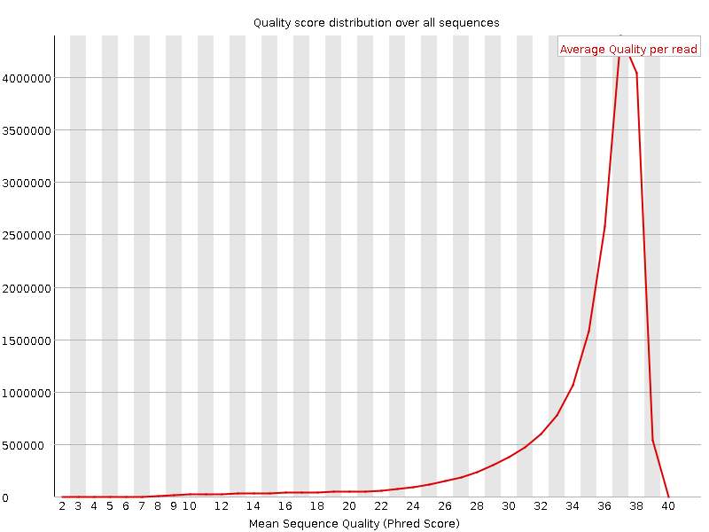
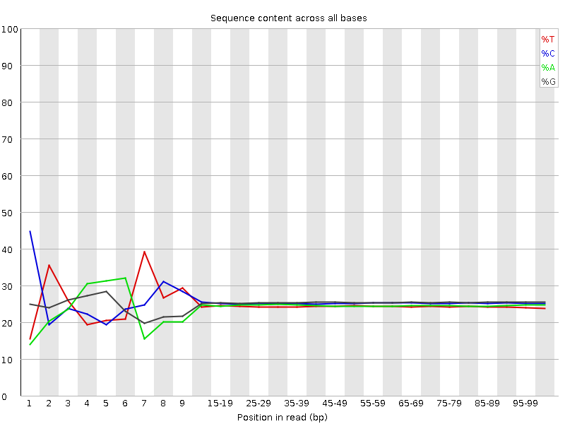
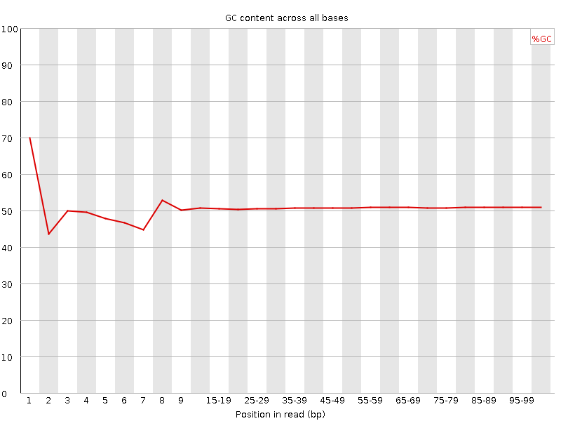
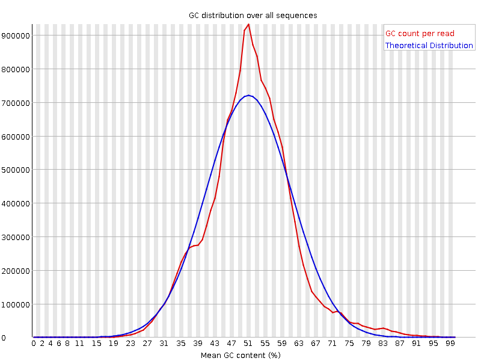
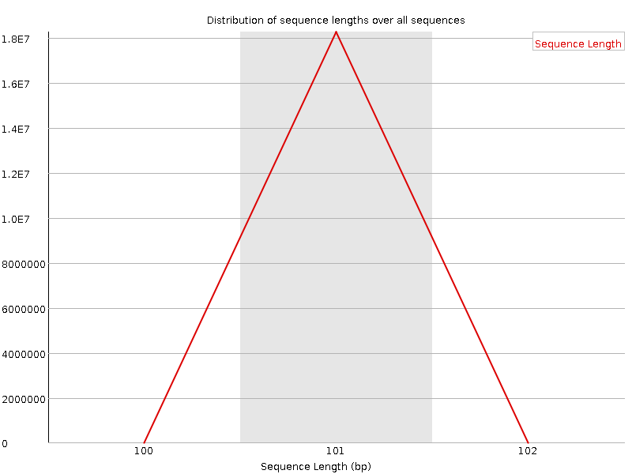
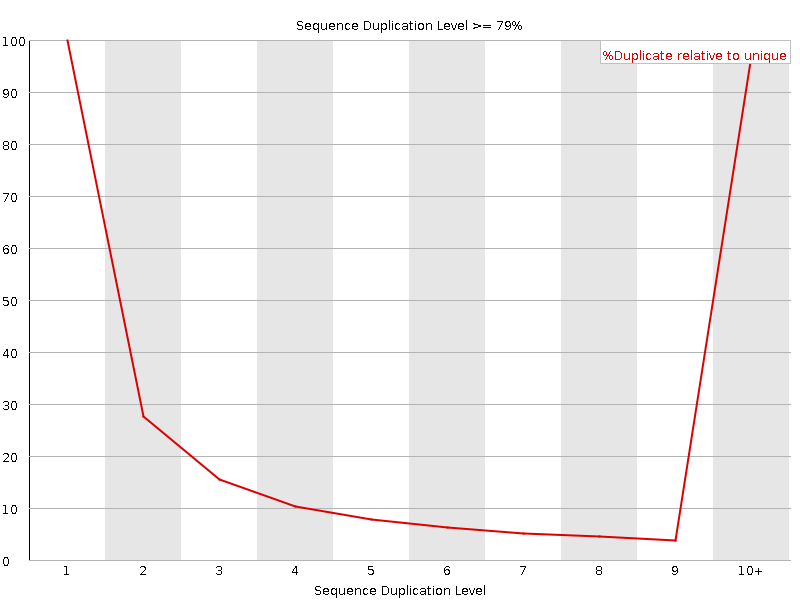
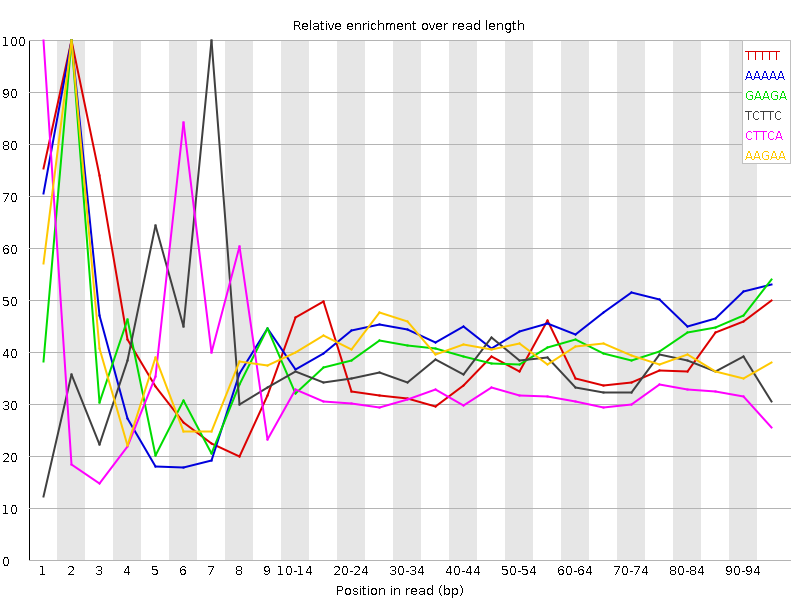

![[OK]](Icons/tick.png) Basic Statistics
Basic Statistics
| Measure | Value |
|---|---|
| Filename | QANMX034WB_ACTTGA_L004_R1_001.fastq |
| File type | Conventional base calls |
| Encoding | Sanger / Illumina 1.9 |
| Total Sequences | 18258627 |
| Filtered Sequences | 0 |
| Sequence length | 101 |
| %GC | 50 |
Per base sequence quality

Per sequence quality scores

![[FAIL]](Icons/error.png) Per base sequence content
Per base sequence content

Per base GC content

![[WARN]](Icons/warning.png) Per sequence GC content
Per sequence GC content

Per base N content

Sequence Length Distribution

Sequence Duplication Levels

Overrepresented sequences
No overrepresented sequences
Kmer Content

| Sequence | Count | Obs/Exp Overall | Obs/Exp Max | Max Obs/Exp Position |
|---|---|---|---|---|
| TTTTT | 4084845 | 2.5772364 | 6.5820184 | 2 |
| AAAAA | 3862130 | 2.4325428 | 5.398885 | 2 |
| GAAGA | 4106675 | 2.419448 | 5.9253106 | 2 |
| TCTTC | 3845540 | 2.2617116 | 6.0975695 | 7 |
| CTTCA | 3778235 | 2.2213645 | 6.8312774 | 1 |
| AAGAA | 3596990 | 2.1911347 | 5.372537 | 2 |
| TCCTG | 3799170 | 2.160309 | 5.1200657 | 7 |
| CTGAG | 3591285 | 2.0442052 | 5.1708155 | 1 |
| CTGGG | 3671715 | 2.0213418 | 6.069911 | 1 |
| CTCAG | 3553430 | 2.0198815 | 5.4769382 | 1 |
| TCCAG | 3405190 | 1.9356173 | 5.9257817 | 7 |
| CTGGA | 3386675 | 1.9277384 | 6.2876425 | 1 |
| CTCCA | 3352860 | 1.9032549 | 5.128906 | 6 |
| TTCCA | 3171185 | 1.8644574 | 5.9959664 | 6 |
| CTTTG | 2946190 | 1.7351507 | 5.9828534 | 1 |
| CTGAA | 2940995 | 1.730903 | 5.042955 | 1 |
| CTTGG | 2997400 | 1.7067438 | 5.81723 | 1 |
| TCCAC | 2822620 | 1.6022635 | 5.4961576 | 7 |
| TTTAA | 2232000 | 1.4072616 | 5.0264735 | 2 |
| ATCCA | 2237335 | 1.3149611 | 5.3043876 | 6 |